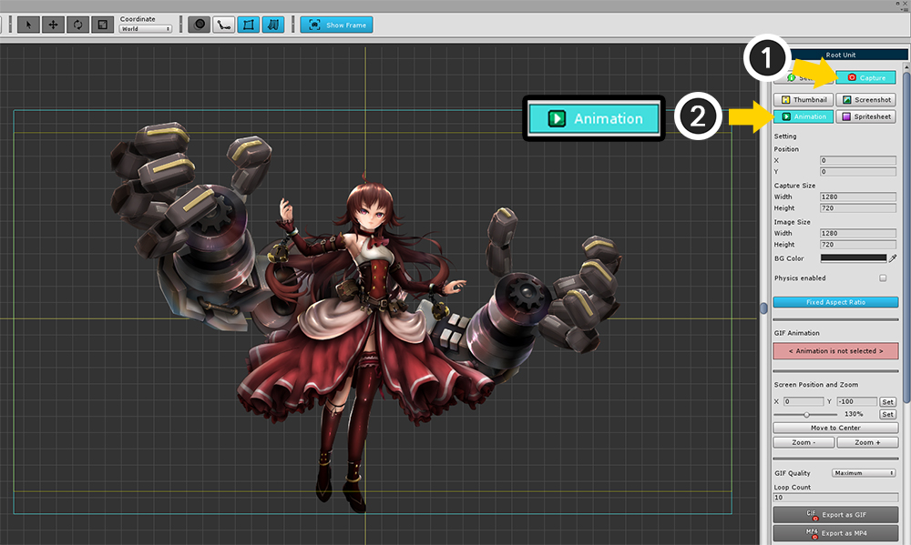

AnyPortrait > 메뉴얼 > 화면 캡쳐
화면 캡쳐
1.1.2
AnyPortrait는 유니티를 거치지 않고 직접 화면을 캡쳐하는 기능을 제공합니다.
전문적인 캡쳐 도구는 아니므로 간단히 SNS 등으로 공유하는 정도의 목적으로 사용하시는 것을 권장합니다.
v1.0.3부터 화면 캡쳐 기능이 개선되었으며, 이전버전과 달리 Mac OSX에서도 이 기능을 지원합니다.
변경된 내용을 이 페이지에서 확인하실 수 있습니다.
화면 캡쳐 기능을 이용하기 위해서
(1) Root Unit을 선택합니다.
화면이 캡쳐되는 영역을 보기 위해 (2) Show Frame 버튼을 누릅니다. (기본적으로 켜진 상태입니다.)

오른쪽 화면에서 (1) Capture 탭을 선택합니다.
4개의 화면 캡쳐 도구를 보실 수 있습니다.
Thumbnail : AnyPortrait 에디터의 첫 화면에서 사용하는 썸네일을 캡쳐합니다.
Screenshot : 스크린샷 이미지를 파일로 저장합니다.
GIF Anim : 애니메이션을 선택하여 GIF 애니메이션 파일로 저장합니다.
Spritesheet : 애니메이션들을 선택하여 스프라이트 시트(Sprite Sheet)나 연속된 이미지(Sequence Image)로 저장합니다.
썸네일 만들기

썸네일을 만들 수 있는 화면입니다.
1. 캡쳐 영역 : 이미지로 저장될 영역입니다. 노란색 사각형이 썸네일로 저장되는 영역입니다.
2. 4개의 캡쳐 도구 : 화면 캡쳐하는 4개의 도구입니다. 여기서는 Thumbnail을 선택합니다.
3. 캡쳐 영역 위치 : 캡쳐 영역을 이동할 수 있습니다. 기본적으로는 (0, 0)입니다.
4. 캡쳐 영역 폭과 배경색 : 캡쳐 영역의 폭과 배경 색상을 설정할 수 있습니다. 폭을 설정하면 높이는 자동으로 지정됩니다.
5. 썸네일 미리보기 : 저장된 썸네일을 볼 수 있습니다.
6. 저장 경로 : 썸네일이 저장되는 경로를 지정합니다. Assets 폴더 내에 위치해야합니다.
7. Make Thumbnail : 썸네일을 생성하는 버튼입니다.

(1) 캡쳐 영역의 위치와 크기, 배경색을 설정합니다.
(2) Change 버튼을 눌러서 썸네일 이미지가 저장될 파일 경로를 설정합니다. Assets 폴더 내에 위치해야합니다.
(3) Make Thumbnail 버튼을 눌러서 썸네일을 만듭니다.
썸네일이 저장된 것을 바로 확인할 수 있습니다.
저장된 썸네일은 에디터를 실행하고 캐릭터를 선택할 때 나타납니다.
썸네일을 이용하면 많은 캐릭터를 만들 때 편리합니다.
스크린샷 저장하기
현재 화면은 이미지 파일로 저장하는 기능입니다.
화면 구성은 썸네일 도구와 유사합니다.
캡쳐 영역은 화면상의 하늘색 사각형입니다.
(1) Screenshot 도구를 선택합니다.
(2) 캡쳐 영역의 위치와 크기를 선택합니다.
(3) 저장될 이미지의 크기와 배경색을 선택합니다.
(4) Fixed Aspect Ratio가 활성화되면 폭과 높이의 비율이 일정하게 유지되며, 캡쳐 영역과 이미지 크기의 비율도 동일해집니다.
캡쳐 영역은 에디터의 작업 공간보다 작아야 합니다.
Position, Capture Size 값을 조절하여 캡쳐 영역 사각형이 작업 공간에 온전히 보여지도록 적절히 설정해주세요.
저장되는 이미지의 크기인 Image Size는 캡쳐 영역의 크기와 무관하게 설정할 수 있습니다.

(1) Take a Screenshot 버튼을 눌러서 이미지를 저장합니다.
(2) 저장 위치는 Assets 폴더의 외부여도 상관이 없습니다.
이미지가 저장되면, 자동으로 저장된 폴더와 이미지가 열립니다.
스크린샷 저장하기 - 애니메이션을 선택하여 화면 캡쳐하기

이번에는 다른 애니메이션을 선택한 뒤, 저장하고자 하는 프레임을 지정하여 화면을 캡쳐해보겠습니다.
(1) Setting 탭으로 이동합니다.
(2) 애니메이션을 선택합니다.
(3) 슬라이더를 이용하여 저장하고자 하는 프레임으로 이동합니다.
(4) 다시 Capture 탭을 선택합니다.
(5) Take a Screenshot 버튼을 눌러서 이미지를 저장합니다.
위와 같이 원하는 애니메이션 포즈를 캡쳐하여 저장할 수 있습니다.
GIF 애니메이션 저장하기

애니메이션을 재생할 수 있는 GIF 파일 포맷으로 저장하는 방법입니다.
GIF Anim (GIF Animation) 도구를 선택하면 위와 같이 다양한 설정들이 나타납니다.
1. 캡쳐 영역 위치
2. 캡쳐 영역 크기
3. 저장하고자 하는 이미지의 크기와 배경색
4. 물리 적용 여부
: 기본적으로 화면을 캡쳐할 때에는 Physics 모디파이어가 꺼진 상태입니다. 이 기능에 체크를 하면 Physics 모디파이어가 적용된 상태로 화면이 캡쳐됩니다.
5. Fixed Aspect Ratio (이미지 종횡비 고정)
6. 선택된 애니메이션 이름
: GIF 파일로 저장하고자 하는 애니메이션의 이름이 나타납니다.
7. 화면 포커스의 위치와 확대 비율 설정
: 캡쳐 영역과 별도로, 화면의 포커스를 지정할 수 있습니다.
마우스 휠 드래그나 휠 스크롤이 아닌 이 설정에서 직접 제어할 수 있습니다. 값을 입력하고 Set 버튼을 누르면 됩니다.
8. Move to Center 버튼, Zoom 버튼
: 화면을 중심으로 이동하거나 확대/축소를 한단계씩 할 수 있습니다.
9. GIF Quality, Loop Count
GIF 이미지의 압축 품질을 0에서 100까지 지정할 수 있습니다. 높은 품질일 수록 용량과 저장 시간이 오래 걸립니다.
GIF 애니메이션 캡쳐시 반복 횟수 만큼 캡쳐를 합니다. 최소 1 이상의 값을 가집니다. (GIF 파일 자체 설정은 "무한 반복"의 값을 가집니다.)
10. Take a GIF Animation 버튼
GIF 애니메이션을 저장합니다.
11. Animation Clips
저장하고자 하는 애니메이션 클립을 선택할 수 있습니다.

기존 설정을 유지한 상태로 GIF 애니메이션을 만들어봅시다.
(1) 애니메이션을 선택합니다.
(2) Take a GIF Animation 버튼을 누릅니다.

GIF 애니메이션이 캡쳐되기 위해 애니메이션이 동시에 실행이 됩니다.
애니메이션이 캡쳐되는 동안 진행 상황을 확인할 수 있습니다.
주의
이 상태에서 AnyPortrait의 창 위치나 크기를 제어하거나 다른 메뉴나 기능을 선택하면 안됩니다.
외부의 다른 프로그램을 실행하는 것은 상관없습니다.

완성된 GIF 애니메이션 파일을 확인하실 수 있습니다.
스프라이트 시트(Sprite Sheet) 저장하기

애니메이션의 각 프레임을 이미지로 만들고, 이미지들을 합쳐놓은 것을 스프라이트 시트(Sprite Sheet)라고 합니다.
스프라이트 시트는 유니티 뿐만 아니라 다른 2D 게임 엔진에서도 종종 사용되는 에셋 방식입니다.
AnyPortrait v1.0.3 부터 스프라이트 시트 저장 기능이 추가되었습니다.
스프라이트 시트 도구를 선택하면 상당히 많은 설정들을 볼 수 있습니다.
1. Image Size per Frame
: 스프라이트의 각각의 프레임의 이미지 크기입니다.
2. Size of Sprite Sheet
: 스프라이트 시트 이미지 전체의 크기입니다. 2의 지수 크기로 지정할 수 있습니다.
3. Method of Compressing size
: 스프라이트 프레임의 크기 압축 방식입니다. 기본값인 Fixed는 위에서 지정한 프레임 크기를 사용합니다. Compressed 방식을 선택하면 이미지를 분석하여 조금 더 크롭된 이미지를 프레임 크기로 설정합니다. 이때의 압축된 이미지 크기는 같은 애니메이션의 프레임들 간에 공통으로 적용됩니다.
4. Margin, BG Color, Physics Enabled
: 각각의 프레임간의 여백(Pixel)입니다. GIF 애니메이션 저장과 마찬가지로 배경색과 물리 적용 여부를 설정할 수도 있습니다.
5. 예상 스프라이트 정보
: 스프라이트의 이미지 크기를 분석하여, 한개의 스프라이트 시트에 몇개의 프레임이 포함될지 나타납니다. Compressed 방식으로 저장하는 경우, 여기서 예상한 결과보다 더 많은 프레임이 포함될 수도 있습니다.
6. Export Meta File
: 스프라이트 시트의 정보가 포함된 메타 파일을 저장할지 여부를 결정할 수 있습니다. 파일 포맷은 XML, JSON, TXT입니다. 복수개 선택이 가능합니다.
7. 화면 포커스와 확대 비율
8. Export Sprite Sheets
: 스프라이트 시트로 저장하는 버튼입니다.
9. Export Sequence Files
: 프레임 이미지들을 스프라이트 시트로 합치지 않고, 각각의 이미지 파일로 저장합니다. 메타 파일도 동일한 방식으로 저장되는데, 내용은 조금 다릅니다.
10. Animation Clips
: 저장하고자 하는 애니메이션 클립을 선택할 수 있습니다. 복수개의 애니메이션을 선택하는 것이 가능합니다.
스프라이트 시트를 만드는 순서입니다.
(1) 프레임의 크기를 설정합니다.
(2) 스프라이트 시트의 크기를 설정합니다. 사용하고자 하는 개발 환경에 맞는 가장 큰 크기를 권장합니다.
(3) 크기 압축 방식을 결정합니다. 적은 용량을 위해 Compressed 방식을 권장하지만 이 경우 메타 파일을 확인해야합니다.
(4) 여백과 배경색을 설정합니다. 개발 환경에 맞게 배경색을 결정하는 것이 좋습니다. 여기서는 투명색을 설정했습니다.

위에 이어진 저장 순서입니다.
(1) 같이 저장할 메타 파일을 선택합니다. 개발 환경에 맞게 선택합니다.
(2) 저장하고자 하는 애니메이션들을 선택합니다.
(3) Export 버튼을 누릅니다. 스프라이트 시트일지 시퀸스 파일일지에 따라서 버튼을 누르면 되겠습니다.
완성된 스프라이트 시트입니다.
자동으로 이미지와 폴더가 실행됩니다.
각각의 프레임이 몇개의 이미지 파일로 저장된 것을 볼 수 있습니다.
메타 파일을 열면 저장된 애니메이션의 정보와 프레임의 크기와 위치 정보 등이 기록된 것을 볼 수 있습니다.
XML, JSON은 실제로 사용될 수 있도록 작성되었으며 TXT 포맷은 쉽게 알아보기 쉬운 방식으로 작성되었습니다.
스프라이트 시트(Sprite Sheet) 저장하기 - 시퀸스 이미지로 저장하기
위 과정에서 Export Sequence Files 버튼을 누르면 프레임들이 각각의 이미지로 저장됩니다.
모든 프레임들이 각각의 이미지로 저장되는 것을 볼 수 있습니다.
프레임 크기나 메타 파일이 생성되는 것은 스프라이트 시트와 동일합니다.
스프라이트 시트(Sprite Sheet) 저장하기 - 크기 압축 방식 비교
크기 압축 방식에 따라 스프라이트 시트의 결과가 다르게 나타납니다.
그 차이점은 다음과 같습니다.
왼쪽이 Fixed 방식이고 오른쪽이 Compressed 방식입니다.
Fixed 방식에서는 설정된 프레임 크기대로 스프라이트 시트를 구성합니다.
Compressed 방식에서는 프레임 크기를 기준으로 이미지를 분석하여 최대한 여백이 없도록 크롭을 하여 스프라이트 시트를 구성합니다.
이미지에 따라서 스프라이트 시트에 더 많은 프레임을 포함할 수 있어서 최적화하기 좋습니다.
프레임의 크기는 메타 파일에 저장되어 있습니다.
Compressed 방식이라 하더라도 같은 애니메이션의 프레임들은 동일한 크기를 가지므로, 완벽히 모든 여백이 사라지는 것은 아닙니다.
스프라이트 시트(Sprite Sheet) 저장하기 - 메타 파일 양식
1. XML
1) 스프라이트 시트
<?xml version="1.0" encoding="utf-8" standalone="yes"?>
<Content>
<AnimationClip>
<Clip Index="0" Name="Idle" FPS="30" Frames="130" />
<Clip Index="1" Name="Run" FPS="40" Frames="24" />
<Clip Index="2" Name="Jump" FPS="60" Frames="59" />
</AnimationClip>
<FrameImage>
<Image AnimationClipIndex="0" Frame="0" SpriteIndex="0" X="4" Y="4" Width="200" Height="200" />
<Image AnimationClipIndex="0" Frame="1" SpriteIndex="0" X="208" Y="4" Width="200" Height="200" />
<Image AnimationClipIndex="0" Frame="2" SpriteIndex="0" X="412" Y="4" Width="200" Height="200" />
<Image AnimationClipIndex="0" Frame="3" SpriteIndex="0" X="616" Y="4" Width="200" Height="200" />
<Image AnimationClipIndex="0" Frame="4" SpriteIndex="0" X="820" Y="4" Width="200" Height="200" />
....
</FrameImage>
</Content>
<Content> : 루트 노드
<AnimationClip> : 애니메이션 클립 정보가 포함된 그룹 노드
<Clip> : 각각의 애니메이션 클립에 대한 노드
- Index : 애니메이션 노드를 구분하는 인덱스
- Name : 애니메이션 클립의 이름
- FPS : 애니메이션의 FPS(Frame Per Second)
- Frames : 애니메이션에 해당하는 프레임 이미지의 개수
<FrameImage> : 프레임 이미지들이 포함된 그룹 노드
<Image> : 각각의 프레임 이미지에 대한 노드
- AnimationClipIndex : 해당 프레임이 어느 애니메이션에 나타내는 인덱스. Clip 노드의 Index 속성을 의미
- Frame : 애니메이션 내에서의 프레임 (시작은 0)
- SpriteIndex : 다수의 스프라이트 시트 파일이 생성된 경우, 저장된 이미지 파일의 번호 (시작은 0)
- X, Y, Width, Height : 프레임의 위치와 크기 (단위는 픽셀)
2) 시퀸스 파일
<?xml version="1.0" encoding="utf-8" standalone="yes"?>
<Content>
<AnimationClip>
<Clip Index="0" Name="Idle" FPS="30" Frames="130" />
<Clip Index="1" Name="Run" FPS="40" Frames="24" />
<Clip Index="2" Name="Jump" FPS="60" Frames="59" />
</AnimationClip>
<FrameImage>
<Image AnimationClipIndex="0" Frame="0" FileName="Sequence_2018415_182230_Idle__0.png" />
<Image AnimationClipIndex="0" Frame="1" FileName="Sequence_2018415_182230_Idle__1.png" />
<Image AnimationClipIndex="0" Frame="2" FileName="Sequence_2018415_182230_Idle__2.png" />
....
</FrameImage>
</Content>
<Content> : 루트 노드
<AnimationClip> : 애니메이션 클립 정보가 포함된 그룹 노드
<Clip> : 각각의 애니메이션 클립에 대한 노드
- Index : 애니메이션 노드를 구분하는 인덱스
- Name : 애니메이션 클립의 이름
- FPS : 애니메이션의 FPS(Frame Per Second)
- Frames : 애니메이션에 해당하는 프레임 이미지의 개수
<FrameImage> : 프레임 이미지들이 포함된 그룹 노드
<Image> : 각각의 프레임 이미지에 대한 노드
- AnimationClipIndex : 해당 프레임이 어느 애니메이션에 나타내는 인덱스. Clip 노드의 Index 속성을 의미
- Frame : 애니메이션 내에서의 프레임 (시작은 0)
- FileName : 프레임 이미지의 시퀸스 이미지 파일 이름
2. JSON
1) 스프라이트 시트
{
"AnimationClip":[
{ "Index":0, "Name":"Idle", "FPS":30, "Frames":130 },
{ "Index":1, "Name":"Run", "FPS":40, "Frames":24 },
{ "Index":2, "Name":"Jump", "FPS":60, "Frames":59 }
],
"FrameImage":[
{ "AnimationClipIndex":0, "Frame":0, "SpriteIndex":0, "X":4, "Y":4, "Width":200, "Height":200 },
{ "AnimationClipIndex":0, "Frame":1, "SpriteIndex":0, "X":208, "Y":4, "Width":200, "Height":200 },
{ "AnimationClipIndex":0, "Frame":2, "SpriteIndex":0, "X":412, "Y":4, "Width":200, "Height":200 },
....
]
}
AnimationClip : 애니메이션 클립 정보들이 포함된 리스트
- Index : 애니메이션 노드를 구분하는 인덱스
- Name : 애니메이션 클립의 이름
- FPS : 애니메이션의 FPS(Frame Per Second)
- Frames : 애니메이션에 해당하는 프레임 이미지의 개수
FrameImage : 프레임 이미지 정보들이 포함된 리스트
- AnimationClipIndex : 해당 프레임이 어느 애니메이션에 나타내는 인덱스. Clip 노드의 Index 속성을 의미
- Frame : 애니메이션 내에서의 프레임 (시작은 0)
- SpriteIndex : 다수의 스프라이트 시트 파일이 생성된 경우, 저장된 이미지 파일의 번호 (시작은 0)
- X, Y, Width, Height : 프레임의 위치와 크기 (단위는 픽셀)
2) 시퀸스 파일
{
"AnimationClip":[
{ "Index":0, "Name":"Idle", "FPS":30, "Frames":130 },
{ "Index":1, "Name":"Run", "FPS":40, "Frames":24 },
{ "Index":2, "Name":"Jump", "FPS":60, "Frames":59 }
],
"FrameImage":[
{ "AnimationClipIndex":0, "Frame":0, "FileName":"Sequence_2018415_182230_Idle__0.png" },
{ "AnimationClipIndex":0, "Frame":1, "FileName":"Sequence_2018415_182230_Idle__1.png" },
{ "AnimationClipIndex":0, "Frame":2, "FileName":"Sequence_2018415_182230_Idle__2.png" },
....
]
}
AnimationClip : 애니메이션 클립 정보들이 포함된 리스트
- Index : 애니메이션 노드를 구분하는 인덱스
- Name : 애니메이션 클립의 이름
- FPS : 애니메이션의 FPS(Frame Per Second)
- Frames : 애니메이션에 해당하는 프레임 이미지의 개수
FrameImage : 프레임 이미지 정보들이 포함된 리스트
- AnimationClipIndex : 해당 프레임이 어느 애니메이션에 나타내는 인덱스. Clip 노드의 Index 속성을 의미
- Frame : 애니메이션 내에서의 프레임 (시작은 0)
- FileName : 프레임 이미지의 시퀸스 이미지 파일 이름
3. TXT
1) 스프라이트 시트
=========================================================================
AnyPortrait Sprite Sheet Data
=========================================================================
AnimationClip : 3
Index Name FPS Frames
0 Idle 30 130
1 Run 40 24
2 Jump 60 59
=========================================================================
FrameImage : 213
ClipIndex Frame SpriteIndex X Y Width Height
0 0 0 4 4 200 200
0 1 0 208 4 200 200
0 2 0 412 4 200 200
....
=========================================================================
AnimationClip : 애니메이션 클립 정보의 개수
- Index : 애니메이션 노드를 구분하는 인덱스
- Name : 애니메이션 클립의 이름
- FPS : 애니메이션의 FPS(Frame Per Second)
- Frames : 애니메이션에 해당하는 프레임 이미지의 개수
FrameImage : 프레임 이미지 정보들의 총 개수
- ClipIndex : 해당 프레임이 어느 애니메이션에 나타내는 인덱스. Clip 노드의 Index 속성을 의미
- Frame : 애니메이션 내에서의 프레임 (시작은 0)
- SpriteIndex : 다수의 스프라이트 시트 파일이 생성된 경우, 저장된 이미지 파일의 번호 (시작은 0)
- X, Y, Width, Height : 프레임의 위치와 크기 (단위는 픽셀)
2) 시퀸스 파일
=========================================================================
AnyPortrait Sprite Sheet Data
=========================================================================
AnimationClip : 3
Index Name FPS Frames
0 Idle 30 130
1 Run 40 24
2 Jump 60 59
=========================================================================
FrameImage : 213
ClipIndex Frame FileName
0 0 Sequence_2018415_182230_Idle__0.png
0 1 Sequence_2018415_182230_Idle__1.png
0 2 Sequence_2018415_182230_Idle__2.png
....
=========================================================================
AnimationClip : 애니메이션 클립 정보들이 포함된 리스트
- Index : 애니메이션 노드를 구분하는 인덱스
- Name : 애니메이션 클립의 이름
- FPS : 애니메이션의 FPS(Frame Per Second)
- Frames : 애니메이션에 해당하는 프레임 이미지의 개수
FrameImage : 프레임 이미지 정보들이 포함된 리스트
- ClipIndex : 해당 프레임이 어느 애니메이션에 나타내는 인덱스. Clip 노드의 Index 속성을 의미
- Frame : 애니메이션 내에서의 프레임 (시작은 0)
- FileName : 프레임 이미지의 시퀸스 이미지 파일 이름
MP4 영상 저장하기
애니메이션을 선택해서 MP4 영상 파일로 저장하여 내보낼 수 있습니다.
이 기능은 Unity 2017.4 또는 그 이후의 버전에서 사용이 가능합니다.
Unity 2018.1 버전부터는 더 향상된 화질의 영상으로 저장됩니다.

(1) Root Unit을 선택한 상태에서 Capture 탭을 선택합니다.
(2) Animation 탭 (기존의 GIF Anim 탭)을 선택합니다.
(1) 화면을 캡쳐할 영역의 위치와 크기를 정하고, 저장할 영상의 크기를 정합니다.
작업 화면에서 바로 촬영하는 것이므로, 화면 전체를 촬영하는 것은 지원되지 않습니다.
기본적인 1080p 화면을 기준으로 대략 720p (1280x720)까지 촬영이 가능합니다.
(2) GIF와 달리 계속해서 영상이 반복되서 재생되지 않으므로, Loop Count에 적당한 값을 입력합니다.
(3) 촬영하고자 하는 Animation Clip을 선택합니다.
(4) Export as MP4 버튼을 클릭합니다.

MP4 영상 파일의 경로와 이름을 설정하고 저장 버튼을 누릅니다.
애니메이션이 자동으로 재생되면서 영상이 촬영됩니다.
이 과정은 매우 오래 걸리며, 이 과정에는 다른 작업을 하지 마시길 바랍니다.
Cancel 버튼을 눌러서 촬영을 중단할 수 있습니다.
작업이 완료되면 저장된 영상 파일이 자동으로 실행됩니다.